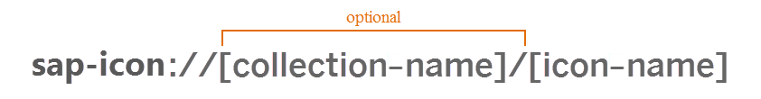
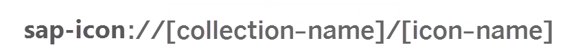

Icon and IconPool
Icon here refers to the concept "Icon font" which uses internally special characters displayed in special font as Icons. Comparing with normal pixel base images, Icon has lots of advantages.
Therefore we have implemented a sap.ui.core.Icon Control together with a bunch of predefined icons that are managed within sap.ui.core.IconPool?.
How to discover icons
We have now almost 500 predefined icons inside our library and you can have a overview and discover the icon you really want in Icon-Explorer.
How to use Icon as an app developer
Each Icon has a unique name which is sufficient for identifying the Icon itself within its collection. Using the predefined Icons doesn't need a collection name, but for custom Icons, there's also a collectionName needed.
After finding out the right Icon that fits your needs, you can get the URI of the icon by calling the following function. Then you can assign it to some control which support Icon Font.
jQuery.sap.require("sap.ui.core.IconPool"); var sURI = sap.ui.core.IconPool.getIconURI("accidental-leave");//please change the parameter to the name of your desired icon
Or you can write the Icon URI directly after knowing the collection name (not necessary for predefined icons) and icon name. Please follow the format shown below:

Then set the sURI to control's correspondent property where it's supported.
How to extend with custom icons
When you have your own icon font file and want to use them also through the sap.ui.core.Icon control, you need to register them in sap.ui.core.IconPool. Depending on the browsers your application supports, different types of font file need to be provided. If IE version less than 9, for example IE8, needs to be supported, font files with extension .eot and .ttf are required. If not, .ttf only is enough.
Before the registration in sap.ui.core.IconPool, the font file needs to be declared with font-face tag in css styles.
If IE version less than 9 is supported by your application, write the css as following:
<style> font-face { font-family: 'SAP-icons'; /*Please replace 'SAP-icons' with your font name which will be used when register in sap.ui.core.IconPool*/ src: url('_PATH_TO_EOT_FILE_'); src: url('_PATH_TO_EOT_FILE_?#iefix') format('embedded-opentype'), /*?#iefix is required to be added to the end of the path of eot file here*/ url('_PATH_TO_TTF_FILE_') format('truetype'); font-weight: normal; font-style: normal; }; </style>
If not, write a simpler version:
<style> @font-face { font-family: 'SAP-icons'; /*Please replace 'SAP-icons' with your font name which will be used when register in sap.ui.core.IconPool*/ src: url('_PATH_TO_TTF_FILE_') format('truetype'); font-weight: normal; font-style: normal; }; </style>
Then calling sap.ui.core.IconPool?.addIcon with the following parameters for each of the character which your icon supports:
- iconName: the name of the current icon which must be unique inside the same collection which will be the as the key of the icon together with the collectionName.
- collectionName: the name of the whole collection of icons.
- fontFamily: this needs to be the same string you have written inside the @font-face in css to font-family property.
- content: this is the special character that represents this icon in a format like "e000" without any escaper.
After registering each of the icons, you can reference them either by calling sap.ui.core.IconPool?.getIconURI with the iconName and collectionName used in addIcon function or write the icon URI directly in the following format:

How to use Icon as a Control Developer
Image control is used
For controls which already support image URI, please follow the code change which is taken from sap.m.Dialog implementation.
The old code which only supported sap.m.Image looked like:
sap.m.Dialog.prototype.setIcon = function(sURI){ this.setProperty("icon", sURI, true); if(!jQuery.os.ios){ //icon is only shown in non iOS platform if(this._iconImage){ this._iconImage.setSrc(sURI); }else{ this._iconImage = new sap.m.Image(this.getId() + "-icon", {src: sURI}); } } return this; };
In order to make it support icon URI, the new code will look like below. sap.ui.core.IconPool.createControlByURI returns an instance of sap.ui.core.Icon if sURI is an icon URI, otherwise the second parameter as constructor is called to create an instance. The sURI will be set to the src property on the instance.
sap.m.Dialog.prototype.setIcon = function(sURI){ this.setProperty("icon", sURI, true); if(!jQuery.os.ios){ //icon is only shown in non iOS platform if(this._iconImage){ this._iconImage.setSrc(sURI); }else{ this._iconImage = sap.ui.core.IconPool.createControlByURI({ src: sURI //src is mandatory /* other properties can be put here, such as id, ...*/ }, sap.m.Image); } } return this; };
IMG tag rendered directly in control
If the img tag is rendered directly in the control not by creating an Image control, the newly created writeIcon method on sap.ui.core.RenderManager is ready for use. writeIcon accepts an URI as the first parameter and depending on this parameter it renders either an img tag or a span. The given classes and attributes as the second and third parameter will also be added to the rendered tag.
Using through CSS
Font face is inserted into style sheet dynamically when the Icon or writeIcon is used for the first time. If the special text needs to be written into CSS in order to show the icon in some control, the sap.ui.core.IconPool?.insertFontFaceStyle function needs to be called to insert the built in font face into CSS.
jQuery.sap.require("sap.ui.core.IconPool"); sap.ui.core.IconPool.insertFontFaceStyle();
Styling the Icon control
If the icon span is rendered directly in your control or icon font is used through css, you have the maximal freedom to style it by yourself.
But when you use the icon by creating an instance of sap.ui.core.Icon inside your control, you can add new style to the icon by using the CSS class "sapUiIcon" the icon span has. Remember to wrap the icon CSS class with your control's root DOM class in order to avoid influcing the style of icons used somewhere else.